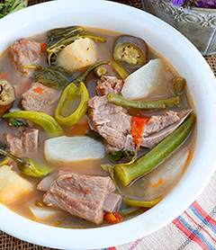
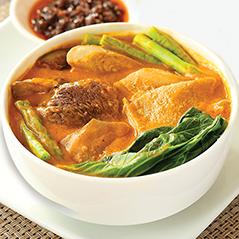
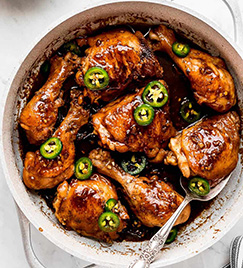
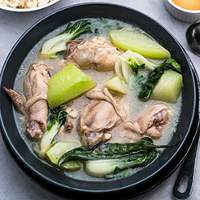
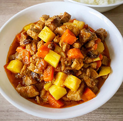

|
| Cooking Nanay |
| Home | Dishes | Recipes | Recommendations |
|  | Pork Sinigang Sinigang is a classic Filipino soup known for its sour and savory medley of flavors. It’s a popular comfort food in the Philippines with or without the cold weather. Learn how to cook this Dish... |
|  | Kare-Kare Kare-kare is a famous Philippine stew (kare derives from "curry") that features the strong beeftaste with the thick savory peanut sauce, added freshness from the vegetables. Learn how to cook this Dish... |
|  | Chicken Adobo Chicken Adobo is a Filipino favorite dish that gained popularity because of its delicious flavor and savory sauce known as the combination of soy sauce and vinegar as well as for its quick and simple method of cooking. Learn how to cook this Dish... |
|  | Chicken Tinola Chicken Tinola is a hearty Filipino soup prepared with a flavorful chicken broth that is infused with garlic, ginger, and fish sauce. Learn how to cook this Dish... |
|  | Pork Menudo Pork Menudo is a classic Filipino dish that composes of a thick savory tomato sauce with pork as a meat ingredient, also with nutritious veggies such as potatoes and carrots. Learn how to cook this Dish... |